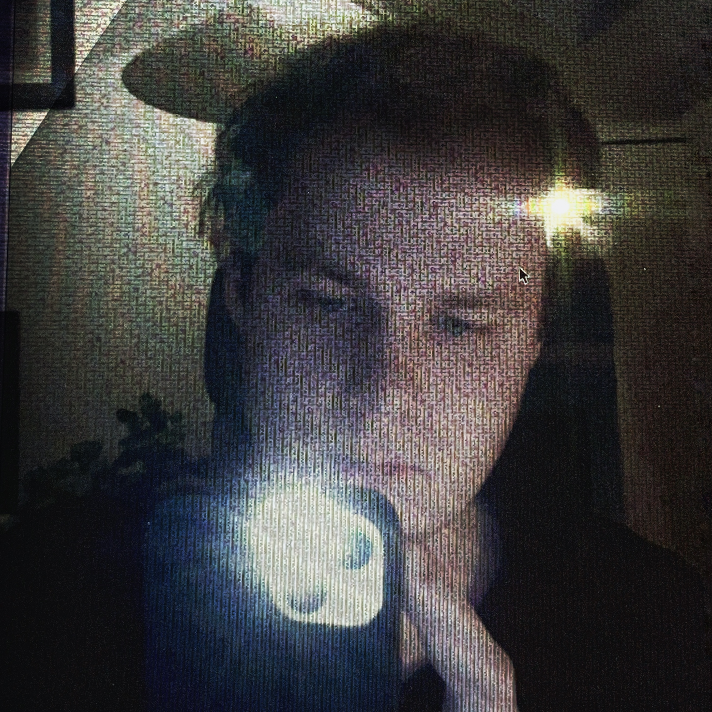
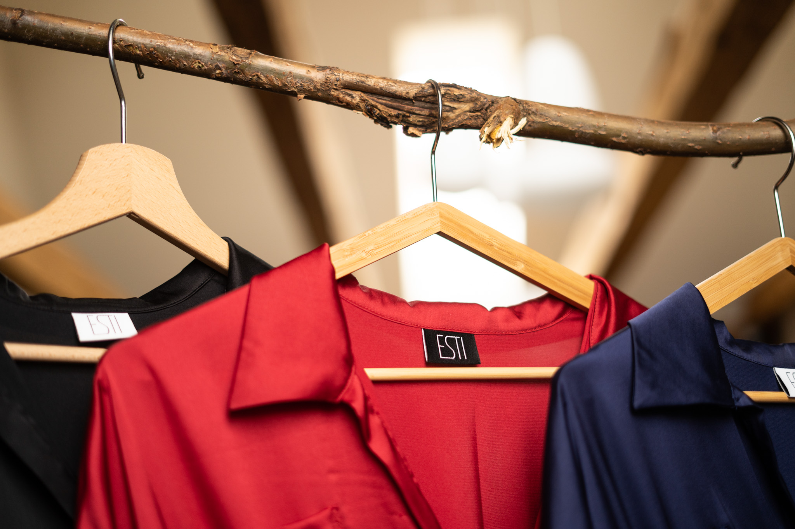

hey, i’m honza

i help create brands.
most of what i do is commercial, there's not much more behind it. i dont like visual pollution and bad design, so i try not to contribute more into our world. üñçÔ∏è
my best work is done when i leave everything to the last minute and don't try hard.
üíæ
my work

⇣
branding for a niche dress maker Esti. 2019.
to attract the right customer, i decided it was best to go with a very minimal logo, which was very popular at the time.
⇣
branding for a czech movie production company. (wip)
bohemia motion pictures produces and distributes all kinds of movies, raging from kids movies to A24 art films with big budgets, so it was important for the logo to be applicable in both scenarios.
⇣
poster for slanted, a german graphic design magazine (2019). when i used to dabble with propaganda. it's very straight to the point.